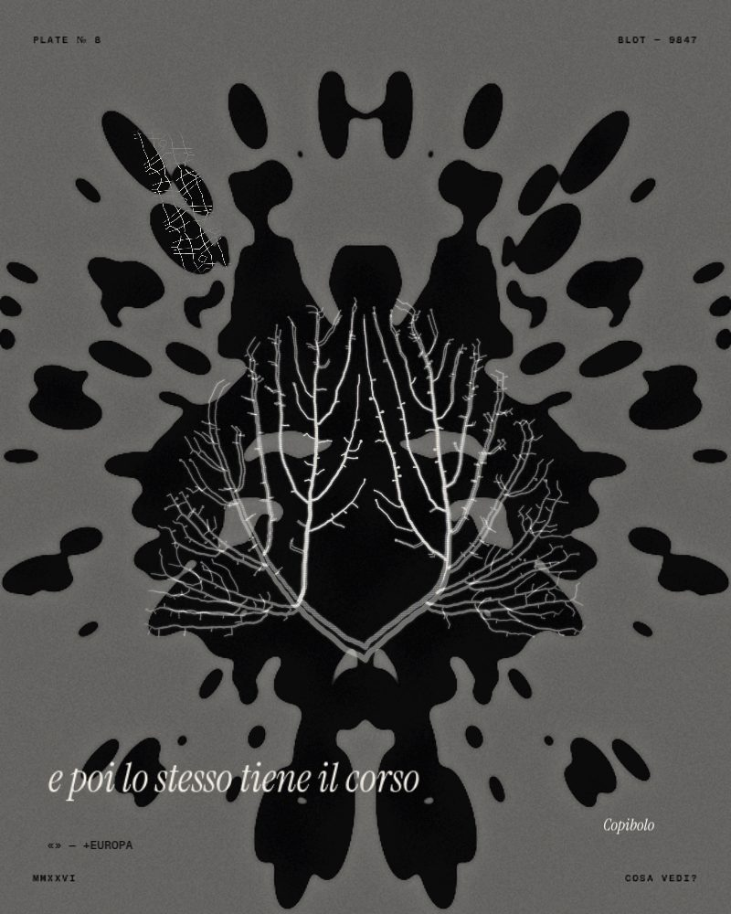

Giorno 1840

E poi lo stesso tiene il corso
ho letto "Regole per la vita in potenza/comportamento_intenzioni_cultura"; "vetro" per me gira a vuoto; ricerca "città" (esplorare): Che forma ha città?; enunciato: «e poi lo stesso tiene il corso» (proseguo da ieri: là arrivavo a stesso, da qui vado a corso)
Oggi: stesso. Ho letto "Regole per la vita in potenza/comportamento_intenzioni_cultura"; "vetro" per me gira a vuoto; ricerca "città" (esplorare): Che forma ha città?; enunciato: «e poi lo stesso tiene il corso» (proseguo da ieri: là arrivavo a stesso, da qui vado a corso).
Da biblioteca: «calcola».
Ho scena:semina (2 volte), scena:luce, scena:campo, scena:stile, scena:motivi, scena:materia, redazione:togli (2 volte), redazione:griglia, redazione:firma. Ho annullato 1 gesti dopo averli guardati.
Ogni emiplegico è già diverso. Paraplegico è soltanto un modo di essere diverso.
Ha retto: Le diagonali (47%) mettono tutto in caduta.
È caduto: Tiene i miei criteri (82%).
come ne ho discusso con me stesso — la tengo
formale (contro, 1.25): Centrato e simmetrico: è fermo, non c'è tensione. — cade
occhio (pro, 1.00): Le diagonali (47%) mettono tutto in caduta. — regge
memoria (contro, 0.13): La mano si ripete: scena:semina, scena:luce, scena:stile, scena:motivi, scena:materia, redazione:togli, redazione:griglia, redazione:firma ancora una volta. — regge
conservatore (pro, 2.03): Tiene i miei criteri (82%). — cade
intenzione (contro, 1.75): "stesso" si è perso per strada. — cade
intenzione (pro, 0.75): Viene da: Regole per la vita in potenza/comportamento_intenzioni_cultura. — regge
coerenza (pro, 1.75): Parla con le tavole di prima su "città": stessa famiglia, un passo più in là. — cade
pubblico (pro, 1.00): Si legge: si capisce cosa sto facendo. — regge
ironia (contro, 0.50): Troppo serio per l'umore di oggi. — regge